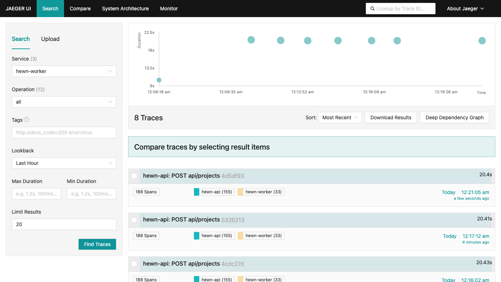
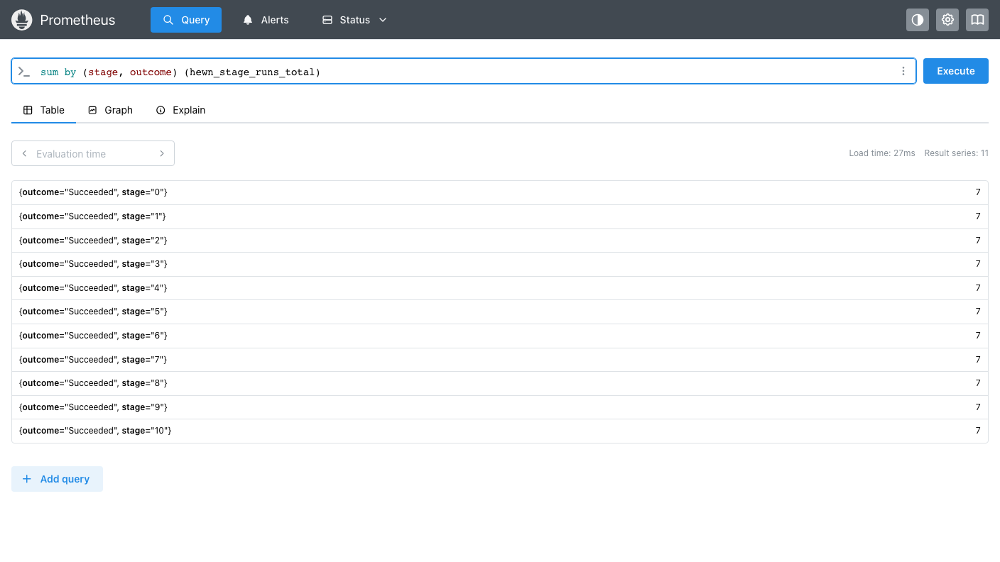
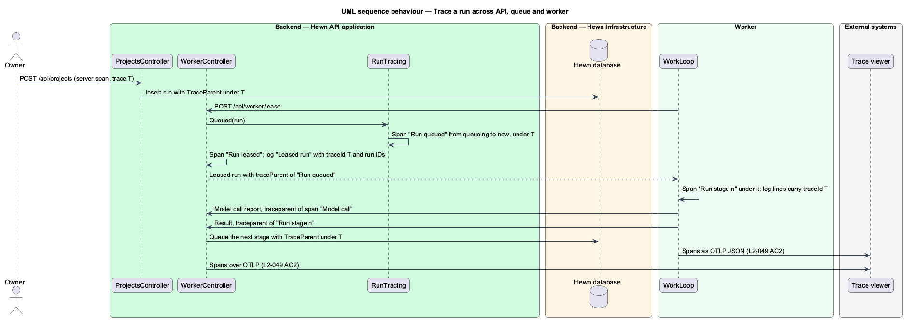
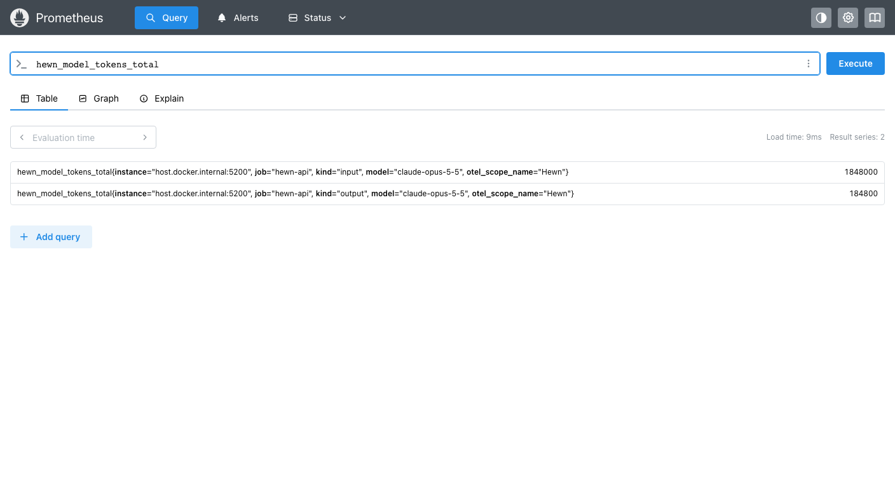
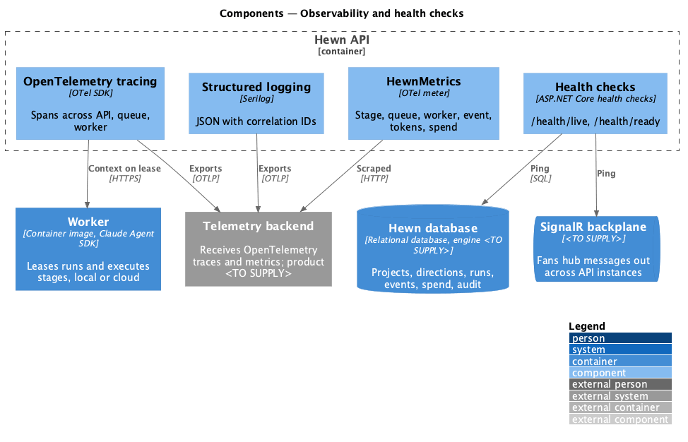
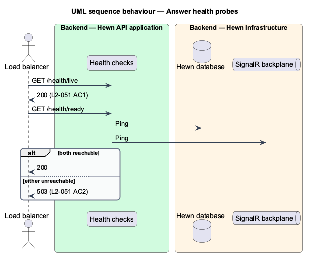

Health checks, correlated logs, one trace per run, and metrics.


$ curl -i /health/live
HTTP/1.1 200 OK
{"status":"Healthy","checks":[]}
$ curl -i /health/ready
HTTP/1.1 200 OK
{"status":"Healthy","checks":[{"name":"database","status":"Healthy"},{"name":"backplane","status":"Healthy"}]}
$ curl -i /health/live
HTTP/1.1 200 OK
{"status":"Healthy","checks":[]}
$ curl -i /health/ready
HTTP/1.1 503 Service Unavailable
{"status":"Unhealthy","checks":[{"name":"database","status":"Unhealthy"},{"name":"backplane","status":"Healthy"}]}
builder.Mode = SqliteOpenMode.ReadWrite; builder.Pooling = false; await using var connection = new SqliteConnection(builder.ToString()); await connection.OpenAsync(cancellationToken); await using var command = connection.CreateCommand(); command.CommandText = "SELECT 1"; await command.ExecuteScalarAsync(cancellationToken); return HealthCheckResult.Healthy();
try
{
await hub.Clients.Group("health-probe").SendAsync("Probe", cancellationToken);
return HealthCheckResult.Healthy();
}
{"timestamp":"2026-11-11T05:21:14.719Z","level":"Information","message":"Leased run","projectId":"c153a3f6-d12d-42c3-917e-6f6eee3ea297","directionId":"e6dfad59-9d6e-42bd-9843-c9cd9281f3a8","stage":5,"runId":"00bad23c-f63a-4d00-9e6e-9fd453a622ae","traceId":"4d5df93c99c6b01f8920cd43cf7b8f11"}
{"timestamp":"2026-11-11T05:21:16.570Z","level":"Information","message":"Run succeeded","projectId":"c153a3f6-d12d-42c3-917e-6f6eee3ea297","directionId":"e6dfad59-9d6e-42bd-9843-c9cd9281f3a8","stage":5,"runId":"00bad23c-f63a-4d00-9e6e-9fd453a622ae","traceId":"4d5df93c99c6b01f8920cd43cf7b8f11"}
{"timestamp":"2026-11-11T05:21:14.7192240Z","level":"Information","message":"Leased run 00bad23c-f63a-4d00-9e6e-9fd453a622ae at stage 5 to worker wkr_1814cca42a24, attempt 1","projectId":"c153a3f6-d12d-42c3-917e-6f6eee3ea297","directionId":"e6dfad59-9d6e-42bd-9843-c9cd9281f3a8","stage":5,"runId":"00bad23c-f63a-4d00-9e6e-9fd453a622ae","traceId":"4d5df93c99c6b01f8920cd43cf7b8f11"}
{"timestamp":"2026-11-11T05:21:16.5698710Z","level":"Information","message":"Run succeeded","projectId":"c153a3f6-d12d-42c3-917e-6f6eee3ea297","directionId":"e6dfad59-9d6e-42bd-9843-c9cd9281f3a8","stage":5,"runId":"00bad23c-f63a-4d00-9e6e-9fd453a622ae","traceId":"4d5df93c99c6b01f8920cd43cf7b8f11"}
var fields = new Dictionary<string, object?>();
scopes().ForEachScope((scope, f) => Collect(scope, f), fields);
Collect(state, fields);
using var buffer = new MemoryStream();
// Relaxed escaping keeps quotes and + readable; these lines are never put into HTML.
using (var json = new Utf8JsonWriter(buffer, new JsonWriterOptions { Encoder = JavaScriptEncoder.UnsafeRelaxedJsonEscaping }))
{
json.WriteStartObject();
json.WriteString("timestamp", DateTime.UtcNow.ToString("O"));
json.WriteString("level", logLevel.ToString());
json.WriteString("category", category);
json.WriteString("message", SecretRedactor.Redact(formatter(state, exception)));
if (Activity.Current is { } activity)
{
json.WriteString("traceId", activity.TraceId.ToHexString());
json.WriteString("spanId", activity.SpanId.ToHexString());
}
ActivityContext.TryParse(run.TraceParent, null, out var parent);
var end = DateTimeOffset.UtcNow;
var waited = now - run.CreatedAt;
using var activity = Source.StartActivity(
"Run queued",
ActivityKind.Internal,
parent,
startTime: end - (waited > TimeSpan.Zero ? waited : TimeSpan.Zero));
activity.SetEndTime(end.UtcDateTime); return activity.Id;
private async execute(workerId: string, run: LeasedRun, stop: AbortSignal): Promise<void> {
const span = this.tracer.start(`Run stage ${run.stage}`, {
traceParent: run.traceParent,
attributes: {
'hewn.project.id': run.projectId,
'hewn.direction.id': run.directionId,
'hewn.stage': run.stage,
'hewn.run.id': run.runId,
'hewn.run.epoch': run.epoch,
},
});
try {
await withTrace(span, () => this.executeRun(workerId, run, stop));
} finally {
span.end();
}
}
// Inside a run's span, the API's handling joins the run's trace (L2-049 AC2).
...(currentSpan() ? { traceparent: currentSpan()!.traceParent } : {}),

hewn_event_latency_seconds_sum 0.9959639999999993
hewn_event_latency_seconds_count 728
hewn_model_tokens_total{kind="input",model="claude-opus-5-5"} 1848000
hewn_model_tokens_total{kind="output",model="claude-opus-5-5"} 184800
hewn_queue_depth 0
hewn_spend_usd_total{model="claude-opus-5-5"} 11.08799999999997
hewn_stage_duration_seconds_sum{outcome="Succeeded",stage="5"} 12.959612
hewn_stage_duration_seconds_count{outcome="Succeeded",stage="5"} 7
hewn_stage_runs_total{outcome="Succeeded",stage="5"} 7
hewn_workers_active 1

public void RunEnded(Run run)
{
var tags = new TagList { { "stage", run.Stage }, { "outcome", run.Status.ToString() } };
_stageRuns.Add(1, tags);
if (run.StartedAt is { } started && run.EndedAt is { } ended)
{
_stageDuration.Record((ended - started).TotalSeconds, tags);
}
}
public void EventSent(StoredEvent stored) =>
_eventLatency.Record(Math.Max(0, (_clock.GetUtcNow() - stored.OccurredAt).TotalSeconds));
public void ModelCalled(string model, long inputTokens, long outputTokens, decimal costUsd)
{
_tokens.Add(inputTokens, new KeyValuePair<string, object?>("model", model), new KeyValuePair<string, object?>("kind", "input"));
_tokens.Add(outputTokens, new KeyValuePair<string, object?>("model", model), new KeyValuePair<string, object?>("kind", "output"));
_spend.Add((double)costUsd, new KeyValuePair<string, object?>("model", model));
}
services:
jaeger:
image: jaegertracing/jaeger:2.5.0
ports:
- "16686:16686" # UI
- "4318:4318" # OTLP/HTTP
prometheus:
image: prom/prometheus:v3.4.0
if ($Observability) {
$env:OTEL_EXPORTER_OTLP_ENDPOINT = 'http://localhost:4318'
$env:OTEL_EXPORTER_OTLP_PROTOCOL = 'http/protobuf'
# The token eng/observability/compose.yaml's Prometheus scrapes with; a local value, not a secret.
$env:HEWN_METRICS_TOKEN = 'local-metrics-token-not-a-secret'
}

var response = await Anonymous(factory).GetAsync("/health/ready");
Assert.Equal(HttpStatusCode.ServiceUnavailable, response.StatusCode);
Assert.Equal(new Dictionary<string, string> { ["database"] = "Unhealthy", ["backplane"] = "Healthy" }, await ChecksOf(response));
var text = await response.Content.ReadAsStringAsync();
Assert.DoesNotContain(missing, text);
Assert.DoesNotContain("SQLite", text, StringComparison.OrdinalIgnoreCase);
Assert.Equal(run.ProjectId.ToString(), entry.GetProperty("projectId").GetString());
Assert.Equal(directionId.ToString(), entry.GetProperty("directionId").GetString());
Assert.Equal(0, entry.GetProperty("stage").GetInt32());
Assert.Matches("^[0-9a-f]{32}$", entry.GetProperty("traceId").GetString());
}
Assert.DoesNotContain(Token, _output.ToString());
Assert.Contains("[redacted]", lines.Single(l => l.GetProperty("message").GetString()!.StartsWith("Run failed")).GetProperty("message").GetString());
// The lease hands the worker the trace to continue.
var leaseParent = run.Body.GetProperty("traceParent").GetString()!;
Assert.Matches($"^00-{traceId}-[0-9a-f]{{16}}-01$", leaseParent);
// Listeners are process-wide, so other tests' spans arrive here too: look only at this trace.
var queued = Assert.Single(_spans, s => s.DisplayName == "Run queued" && s.TraceId.ToHexString() == traceId);
Assert.Equal(traceId, queued.TraceId.ToHexString());
Assert.Equal(leaseParent.Split('-')[2], queued.SpanId.ToHexString());
Assert.InRange(queued.Duration.TotalSeconds, 2.5, 3.5);
Assert.Equal(run.RunId.ToString(), queued.GetTagItem("hewn.run.id"));
Assert.Equal(1, Value(scrape, "hewn_stage_duration_seconds_count", "stage=\"0\"", "outcome=\"Succeeded\"")); Assert.Equal(42, Value(scrape, "hewn_stage_duration_seconds_sum", "stage=\"0\""), 1); Assert.Equal(1, Value(scrape, "hewn_stage_runs_total", "stage=\"0\"", "outcome=\"Succeeded\"")); Assert.Equal(1, Value(scrape, "hewn_queue_depth")); Assert.Equal(1, Value(scrape, "hewn_workers_active")); Assert.True(Value(scrape, "hewn_event_latency_seconds_count") > 0); Assert.Equal(1200, Value(scrape, "hewn_model_tokens_total", "kind=\"input\"", "model=\"claude-opus-5-5\"")); Assert.Equal(300, Value(scrape, "hewn_model_tokens_total", "kind=\"output\"", "model=\"claude-opus-5-5\"")); Assert.True(Value(scrape, "hewn_spend_usd_total", "model=\"claude-opus-5-5\"") > 0);
